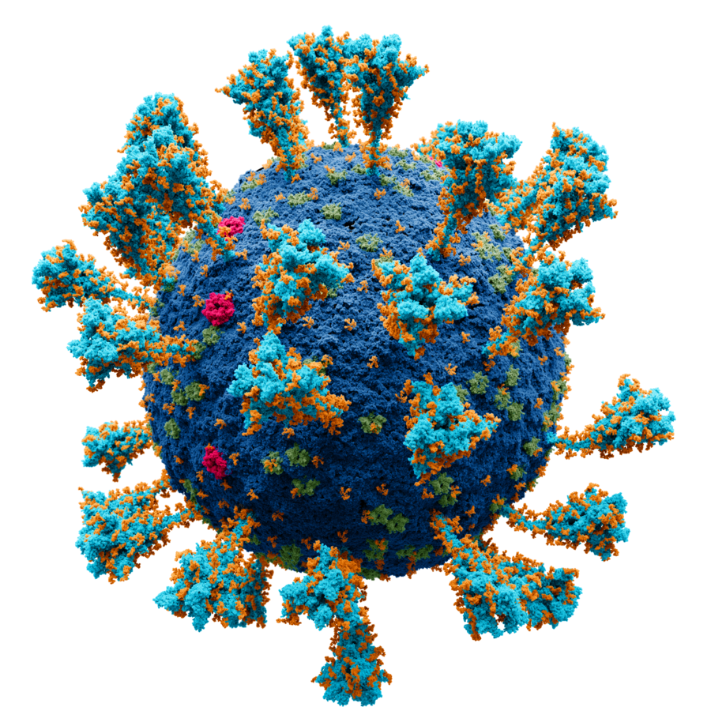
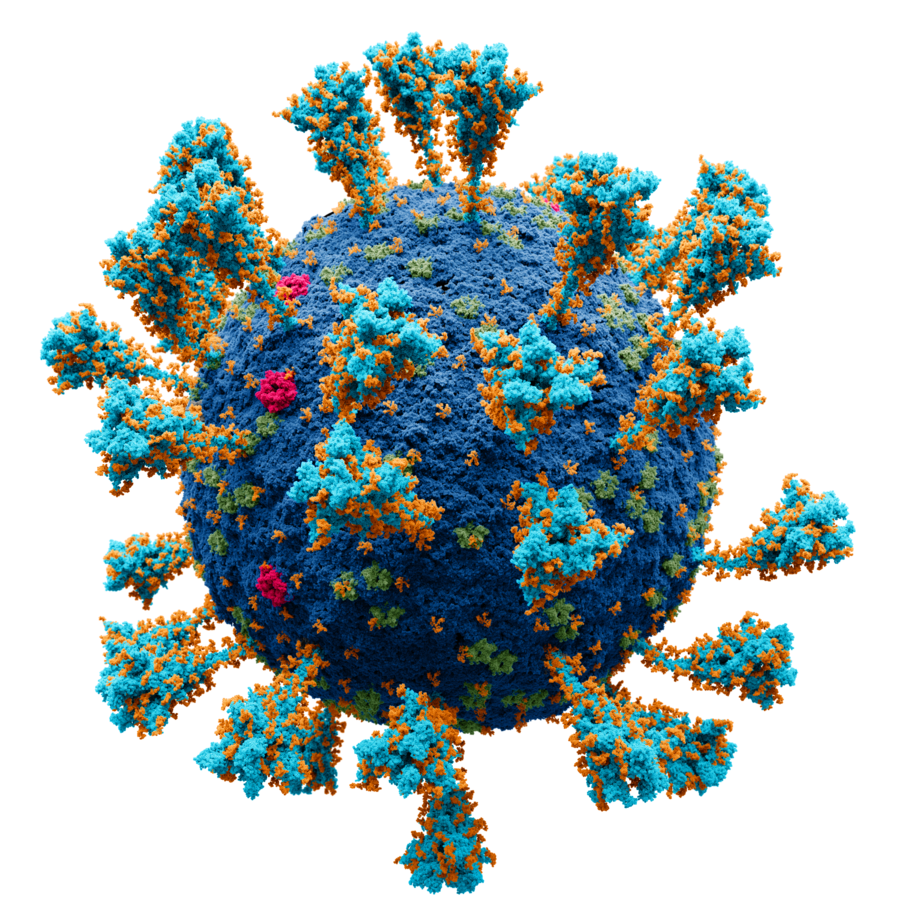

WHAT is coronavirus & COVID19
Coronaviruses are a group of related RNA viruses that cause diseases in mammals and birds. In humans and birds, they cause respiratory tract infections that can range from mild to lethal. Mild illnesses in humans include some cases of the common cold (which is also caused by other viruses, predominantly rhinoviruses),  while more lethal varieties can cause SARS, MERS, and COVID-19. In cows and pigs they cause diarrhea, while in mice they cause hepatitis and encephalo-myelitis.Coronaviruses constitute the subfamily Orthocoronavirinae, in the family Coronaviridae, order Nidovirales, and realm Riboviria. They are enveloped viruses with a positive-sense single-stranded RNA genome and a nucleocapsid of helical symmetry. The genome size of coronaviruses ranges from approximately 26 to 32 kilobases,one of the largest among RNA viruses.They have characteristic club-shaped spikes that project from their surface, which in electron micrographs create an image reminiscent of the solar corona, from which their name derives.
while more lethal varieties can cause SARS, MERS, and COVID-19. In cows and pigs they cause diarrhea, while in mice they cause hepatitis and encephalo-myelitis.Coronaviruses constitute the subfamily Orthocoronavirinae, in the family Coronaviridae, order Nidovirales, and realm Riboviria. They are enveloped viruses with a positive-sense single-stranded RNA genome and a nucleocapsid of helical symmetry. The genome size of coronaviruses ranges from approximately 26 to 32 kilobases,one of the largest among RNA viruses.They have characteristic club-shaped spikes that project from their surface, which in electron micrographs create an image reminiscent of the solar corona, from which their name derives.
Coronavirus disease 2019 (COVID-19) is a contagious disease caused by severe acute respiratory syndrome coronavirus 2 (SARS-CoV-2). -
ORIGIN OF CoronaVirus
The first diagnosis of the respiratory disease caused by the novel (new) coronavirus was in Wuhan in Hubei Province, China in December of 2019. Since the World Health Organization declared a pandemic on March 11, 2020, the number of confirmed cases has topped 184 million, including 33.5 million cases in the United States.
Coronaviruses are often found in bats, cats and camels. The viruses live in but do not infect the animals. Sometimes these viruses then spread to different animal species. The viruses may change (mutate) as they transfer to other species. Eventually, the virus can jump from animal species and begins to infect humans. In the case of COVID-19, the first people infected in Wuhan, China are thought to have contracted the virus at a food market that sold meat, fish and live animals – but they are still investigating. Although researchers don’t know exactly how people were infected, they already have evidence that the virus can be spread directly from person to person through close contact.
Name of COVID-19
During the initial outbreak in Wuhan, the virus and disease were commonly referred to as "coronavirus" and "Wuhan coronavirus", with the disease sometimes called "Wuhan pneumonia". In the past, many diseases have been named after geographical locations, such as the Spanish flu, Middle East respiratory syndrome, and Zika virus. In January 2020, the WHO recommended 2019-nCoV and 2019-nCoV acute respiratory disease as interim names for the virus and disease per 2015 guidance and international guidelines against using geographical locations (e.g. Wuhan, China), animal species, or groups of people in disease and virus names in part to prevent social stigma. The official names COVID-19 and SARS-CoV-2 were issued by the WHO on 11 February 2020. Tedros Adhanom explained: CO for corona, VI for virus, D for disease and 19 for when the outbreak was first identified (31 December 2019).The WHO additionally uses "the COVID-19 virus" and "the virus responsible for COVID-19" in public communications.